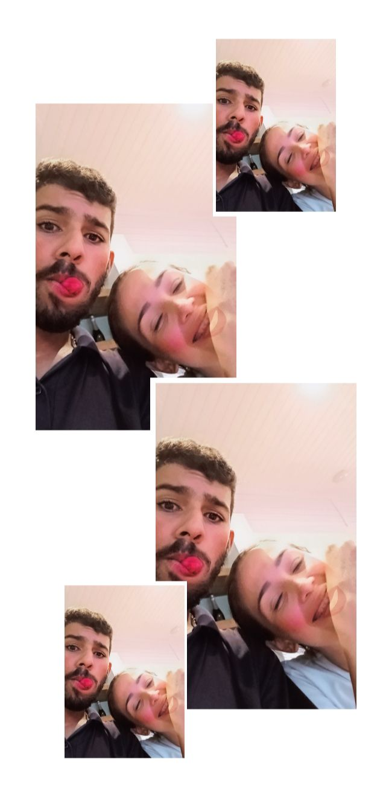

Feliz Dia dos Namorados
Para Você,
Meu Amor
Cada batida do meu coração escreve seu nome.
role para baixo
Minha declaração
Desde o instante em que te conheci, o mundo ganhou cores novas. Cada dia ao seu lado é um pedacinho do meu sonho realizado. Você é o sorriso que eu procuro na multidão, o abraço que cura qualquer dia ruim, e o amor que eu escolho — todos os dias, de novo e de novo.
te amo ♥
Nossos momentos
Quando o pôr do sol parou só pra gente.

Cada passo ao seu lado é primavera.
Pequenos momentos, eternidade inteira.
Te amo mil milhões, caranguejinha.
Por que te amo
💕
Seu sorriso ilumina meus dias
🌹
Sua voz é minha música favorita
✨
Você é meu lugar preferido no mundo
🥰
Te amo de um jeito que não cabe em palavras
A nossa música
Aperte o play e dance comigo 💃🕺